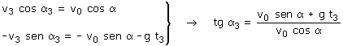
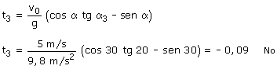

c)
Ecuaciones del movimiento
 |
Parámetros: v0 = 5 m/s, α = 30º g = 9,8 m/s2 |
Aplicación: Se mueve en dirección α3
= 30º sobre la horizontal.
Las componentes de la velocidad en ese momento serán: vx3
= v3·cos α3, vy3 =
v3·cos α3
(v3 incógnita)
 |
 |

Nunca la velocidad apuntará 20º por debajo de
la horizontal.
La razón es evidente: en un tiro la inclinación de la velocidad
siempre va disminuyendo y este movimiento empieza con la velocidad formando
30º por debajo de la horizontal...